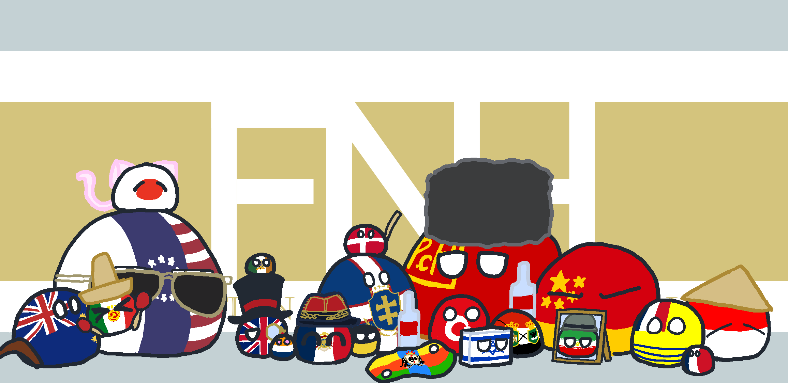

Bienvenue au Fédération de la Nation Historuit
自分なりの国家を創作する「架空国家」。架空国家と一概に言えど、それは幅広いジャンルを内包しています。塑史国家連盟は、その中でも「現実世界により準拠した国家」の創作活動を応援するために設立されました。私たちは主に、近代に歴史改変を施した架空の国「塑史国家」を創作し、それらの歴史を編纂する統一史活動、そして一連の歴史改変によって現実と異なる歴史を歩んだ架空世界を現在進行形で運営(ロールプレイ)することによって、現代の国際社会のダイナミズムを演出しています。塑史国家連盟の略称である“ＦＮＨ”は正式名称「Fédération de la Nation Historuit」の略です。
主な活動拠点はTwitterとDiscord、そして各運営者の管理するニュースサイトです。
Carte